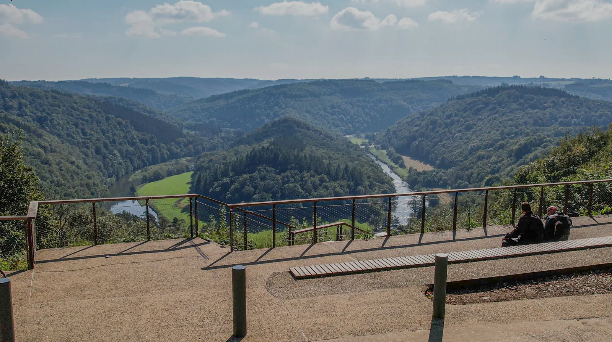

A weekend in Our
— and the bend in the Semois.
de Maxime
23·V
2026
Two nights, anchored on a 2-star Saturday tasting menu you can't drive home from. Solve the bed, and the river, the falconry, the meander, and the morning walk fall into place around it.[7]

Postcards from the meander
Two threads across the weekend
Late May is structurally right
Kayak flow sits in the 15–60 m³/s "sporty" band that fades by summer.[10] The Parc national runs ~60 ranger-led walks April–October.[13] Bouillon parking is free citywide and crowds haven't started.[18] The Tombeau du Géant adventure loop's two Semois fords are passable.[16]
The trip is car-dependent
Kayak shuttles, viewpoint hops and the Daverdisse fallback all assume one. Without a car, narrow the plan to walks from Our's church and the flat Au gré de la Semois riverside path at Bouillon[17] — and skip the kayak.
Open questions — covered by the same phone call
- Tasting menu vs. à-la-carte pricing
- Cost of the wine pairing
- Dress code
- Expected length of the meal
- How far ahead the restaurant takes reservations vs. the room
- Late Sunday checkout — negotiate while you're already on the line